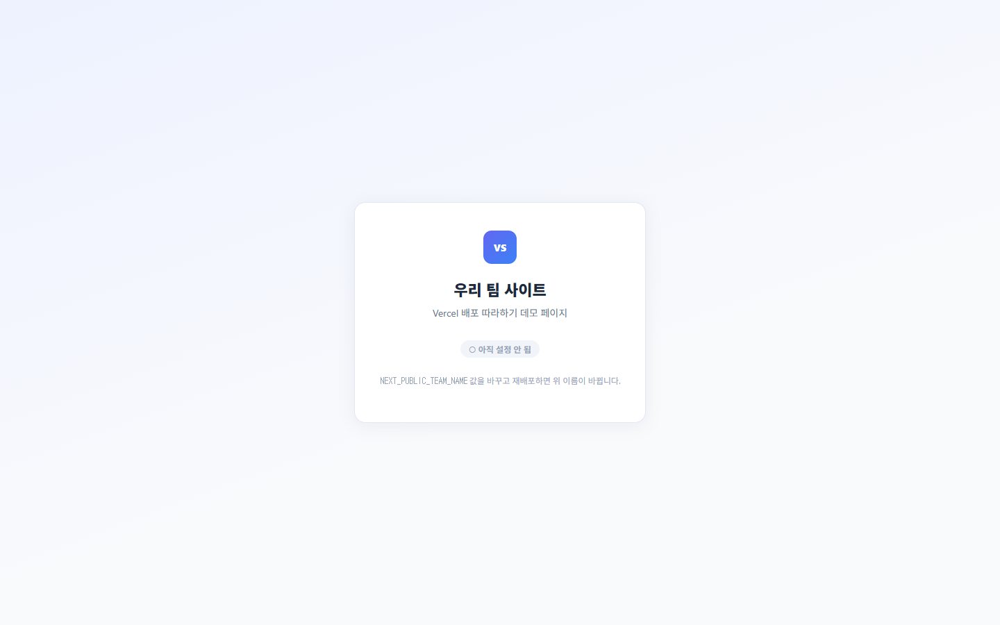
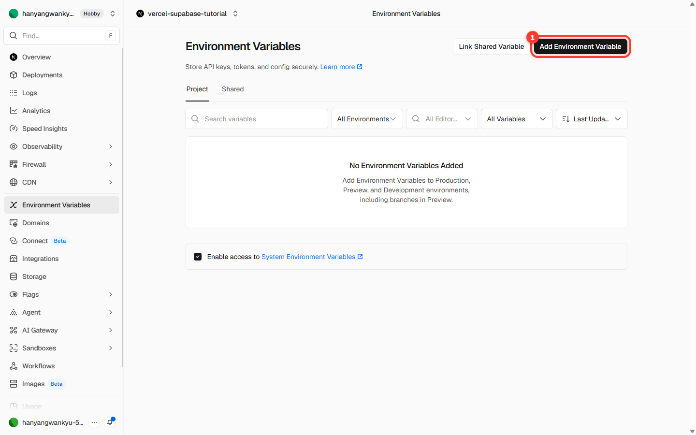
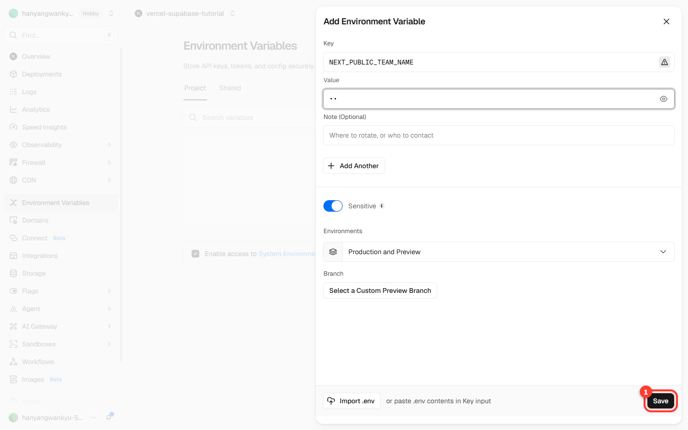
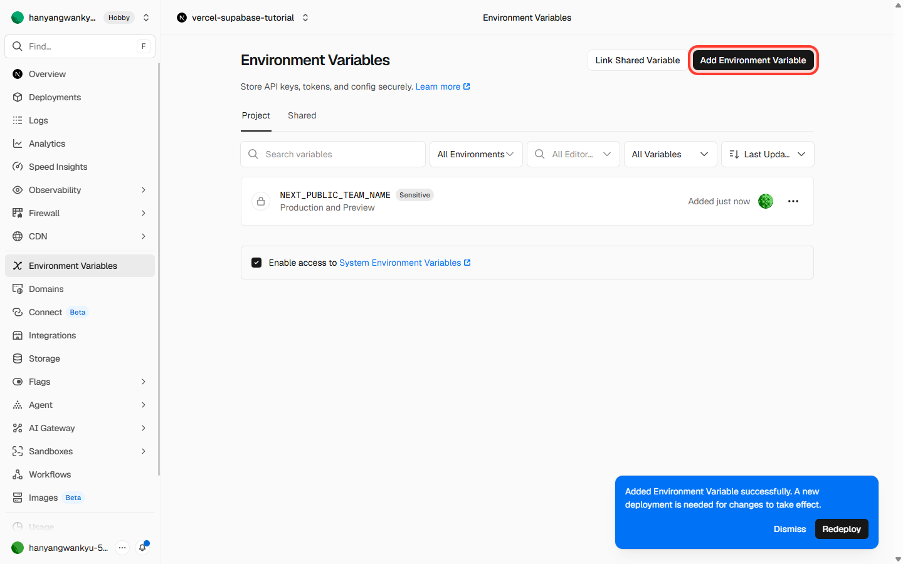
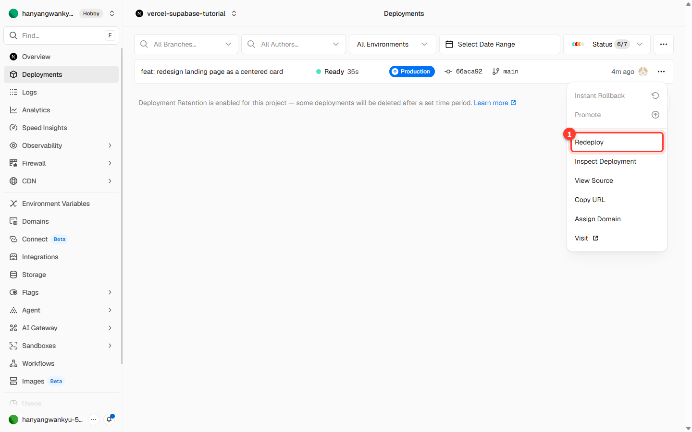
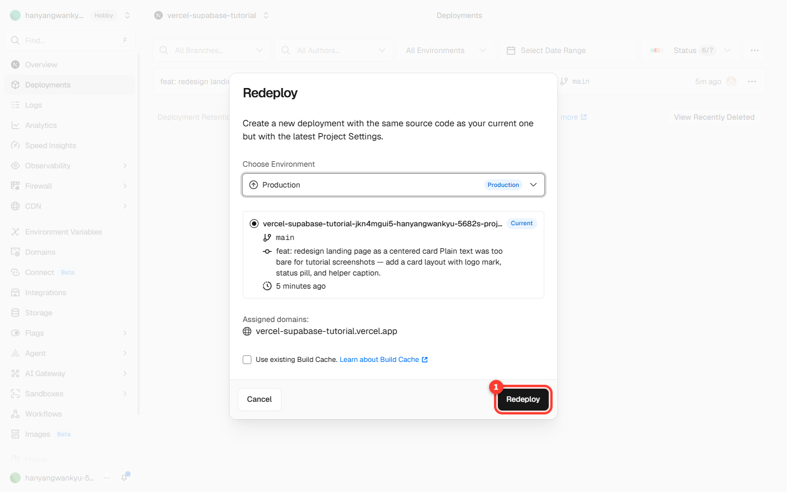
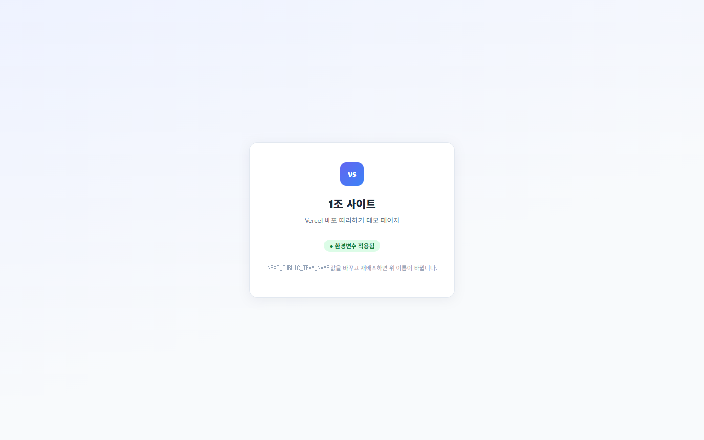

저장소 접근 범위는 All repositories(전체) 또는 Only select repositories(특정 저장소만) 중 하나를 고릅니다.
Only select repositories를 골랐다면 목록에서 1단계에서 만든 vercel-test를 반드시 선택하세요. 빠뜨리면 다음 단계 목록에 안 보입니다.
자주 나는 함정 — 저장소를 가져오려 할 때 "To link a GitHub repository, you need to install the GitHub integration first" 라는 빨간 경고가 보이면, 그 저장소가 있는 계정(개인 계정 또는 조직)에 Vercel 앱이 아직 설치 안 된 것입니다. 위 1~3번처럼 그 계정에 Vercel을 한 번 설치하면 해결됩니다.
설치가 필요하다는 경고
3단계프로젝트 가져오기 (Import)
연결이 끝나면 같은 화면에서 이어서 우리 저장소를 고를 수 있습니다.
설치가 끝나면 Vercel 화면으로 돌아옵니다. Import Git Repository 목록에 1단계에서 만든 vercel-test가 보입니다. (화면이 닫혔다면 Add New… → Project로 다시 들어가면 됩니다.)
① 미러링한 vercel-test 저장소 ② Import 버튼
목록에 vercel-test가 안 보이면 2단계의 Vercel 앱 설치·접근 권한이 그 계정에 안 돼 있는 것입니다. 2단계로 돌아가 설치하거나, 접근 범위에 vercel-test를 추가해 주세요.
vercel-test 오른쪽의 Import(가져오기)를 누릅니다.
아래 설정 화면이 나옵니다. 대부분 그대로 두면 됩니다.
Vercel Team / Project Name: 그대로 두기 (프로젝트 이름만 원하면 바꿔도 됨)
Application Preset: 보통 자동으로 Next.js 등 우리 프로젝트에 맞게 잡힙니다. 그대로 두기.
Root Directory: ./ 그대로 두기.
프로젝트 설정 화면
프레임워크가 자동으로 안 잡히면(Other로 표시되면) Application Preset만 우리 프로젝트에 맞게 골라줍니다. 잘 모르겠으면 강사에게 화면을 보여주세요.
4단계배포하기 (Deploy)
맨 아래 Deploy(배포) 버튼을 누릅니다.
잠시 빌드(사이트를 만드는 과정)가 돌아갑니다. 1~2분 정도 기다리면 됩니다.
배포 진행 중
끝나면 Congratulations!(축하합니다!) 화면과 함께 우리 사이트 미리보기가 보입니다.
배포 성공 화면
빌드 실패(빨간 글씨)가 나도 당황하지 마세요. 에러 메시지에 보통 답이 있습니다(오타·빠진 파일 등). 막히면 강사와 함께 메시지를 읽어봅니다. 일단 여기서는 "주소가 나오는 것"이 목표입니다.
5단계배포된 사이트 확인
축하 화면에서 Continue to Dashboard(대시보드로 이동)를 누릅니다.
프로젝트 대시보드에서 우리 사이트 주소 ...vercel.app 을 확인할 수 있습니다.
프로젝트 대시보드
그 주소를 눌러(또는 휴대폰으로) 열어봅니다. 내 컴퓨터가 아닌 곳에서도 보이는 진짜 인터넷 사이트입니다.

환경변수 넣기 전 사이트
위 예제 사이트는 아직 환경변수를 안 넣어서 "우리 팀 사이트" 라는 기본값이 보이고, "아직 설정 안 됨"이라고 표시됩니다. 다음 단계에서 이걸 바꿔봅니다.
6단계환경변수 넣기
환경변수는 비밀번호·열쇠처럼 코드에 직접 쓰면 안 되는 값, 또는 상황에 따라 바꾸고 싶은 값을 따로 보관하는 곳입니다. 여기서는 화면에 보일 팀 이름을 환경변수로 넣어봅니다.
프로젝트 화면 왼쪽 메뉴에서 Settings → Environment Variables(환경변수)로 들어갑니다. 처음엔 비어 있습니다.

환경변수 화면 (비어 있음)
오른쪽 위 Add Environment Variable(환경변수 추가)를 누릅니다.
입력칸을 채웁니다.
Key(이름): NEXT_PUBLIC_TEAM_NAME
Value(값): 1조 (여러분 팀 이름)

환경변수 입력
Save(저장)를 누릅니다. 목록에 변수가 보이고, "새 배포가 필요하다(A new deployment is needed)"는 안내가 뜹니다.

환경변수 저장됨
중요 — 환경변수는 저장만으로는 화면에 바로 반영되지 않습니다. 값을 적용하려면 다시 배포(재배포) 해야 합니다. 다음 단계입니다.
7단계다시 배포하기 (Redeploy)
왼쪽 메뉴 Deployments(배포)로 갑니다.
맨 위 배포 줄 오른쪽의 ⋯(더보기) 버튼을 누르고 Redeploy(재배포)를 선택합니다.

재배포 메뉴
확인 창이 뜨면 그대로 Redeploy를 누릅니다. (Build Cache 체크는 안 해도 됩니다.)

재배포 확인
다시 1~2분 기다립니다.
8단계결과 확인
재배포가 끝나면 사이트 주소를 새로고침합니다. 팀 이름이 방금 넣은 값("1조")으로 바뀌어 있습니다.
환경변수 넣기 전
환경변수 넣고 재배포 후
"우리 팀 사이트" (기본값)
"1조 사이트" (환경변수 적용)

환경변수 적용 후 사이트
여기까지 왔으면 성공입니다. 직접 만든 사이트를 인터넷에 올리고, 환경변수로 내용까지 바꿔본 것입니다.
보너스 — 자동 재배포
GitHub 저장소에 코드를 수정해서 올리면(push), Vercel이 자동으로 다시 배포합니다. 따로 Deploy를 누르지 않아도 됩니다.
2회차에서 하던 것처럼 코드를 고치고 GitHub에 올리면, Deployments 목록에 새 배포가 자동으로 생깁니다.
즉, 한 번 연결해두면 그다음부터는 "고치고 올리기"만 하면 사이트가 알아서 최신으로 갱신됩니다.